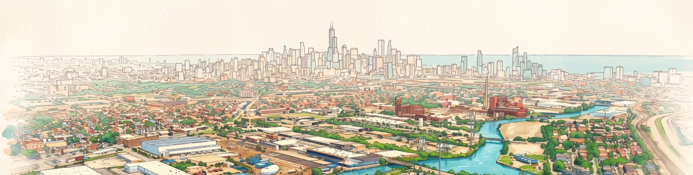
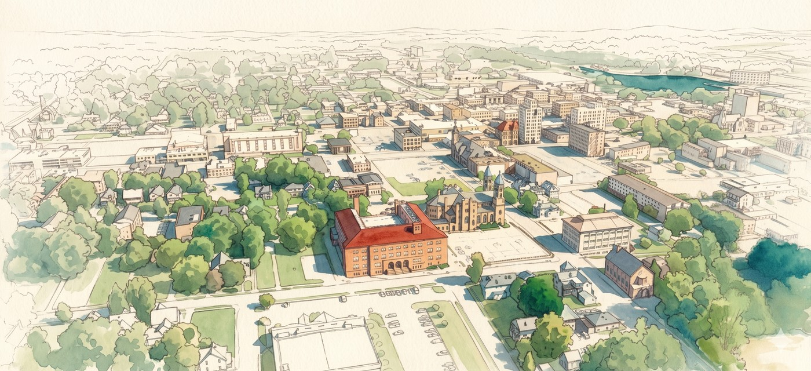
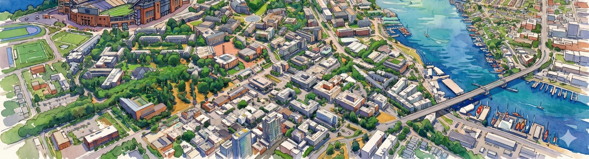
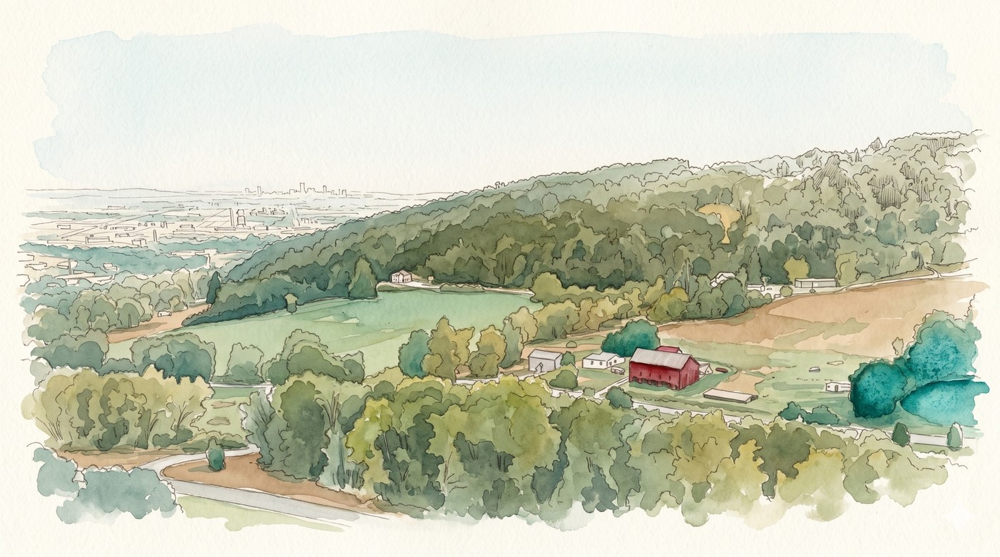
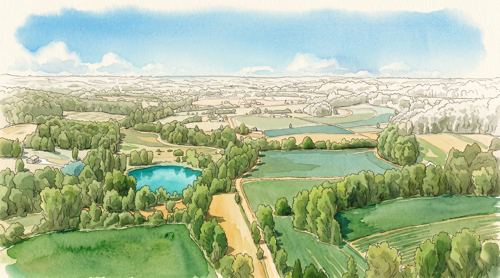
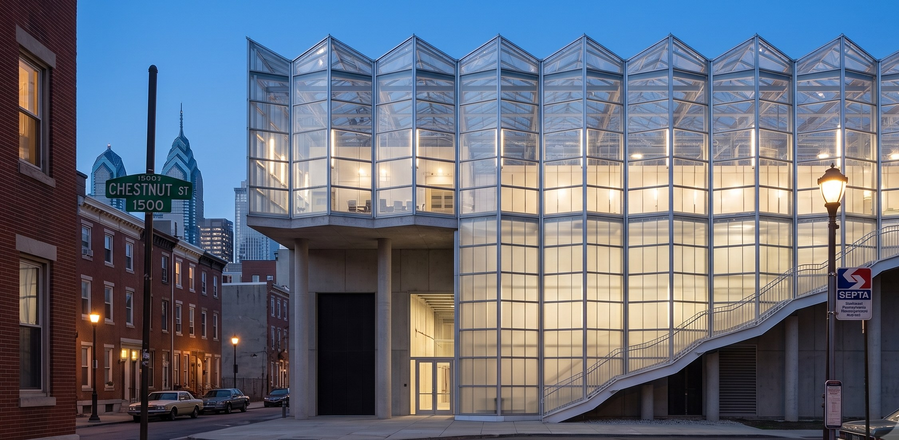

Every MicroLink site sits inside of a community, we prefer to ask and listen to what the community wants before we start to develop a program we think might help.
The data center stands on its own. The community program is its own commitment, co designed with the neighborhood's own organizations, connected to the facility only by the heat that leaves the plant.

Controlled environment growing on recovered heat, anchoring food access and training.

A working brewery on hot water, a visible civic draw and a skills program.

A neighborhood laundry on recovered heat, everyday utility for residents.

Community and office space, open to the neighborhood.
If your city invites us in, the design is not ours alone. We will take suggestions, we will take recommendations, and where a city wants one, we will put it to a vote.
We promise to make it a building that earns a place in the architectural history of your city, and we would like your input on that.

In every market we build, the neighborhood's own organizations design the program. We fund the trusted doers on multi year terms rather than arriving with a finished plan.
By our own definition, we can't do this alone. We invite you to help build solutions in your area, or help us design solutions for data centers everywhere.
Listen first, with the community's organizations and local representatives.
Multi year support to trusted grassroots anchors already doing the work.
A local trades feeder with real hiring into construction and operations.
STEM and career pathways through the neighborhood's schools.